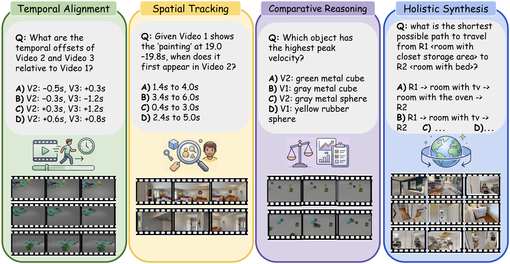
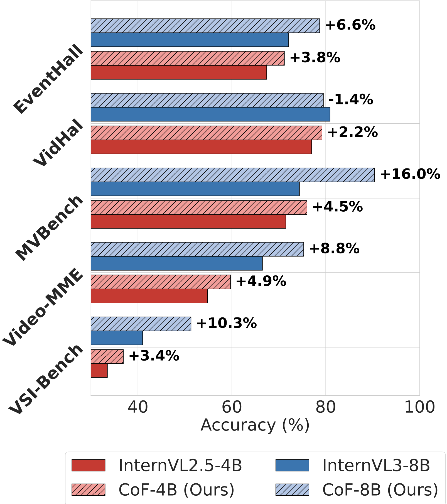
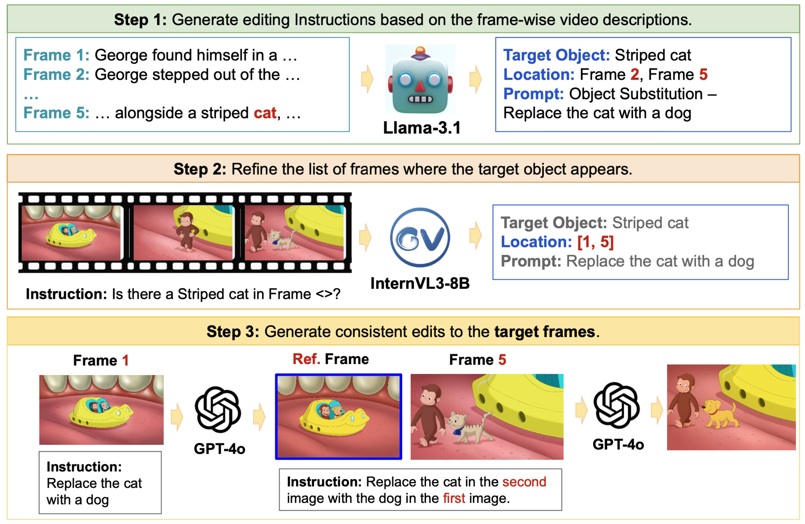
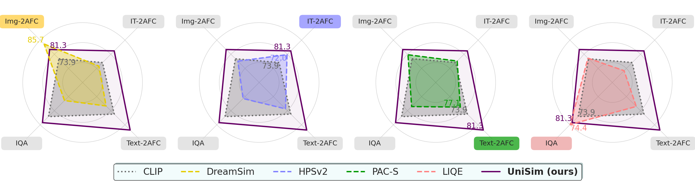
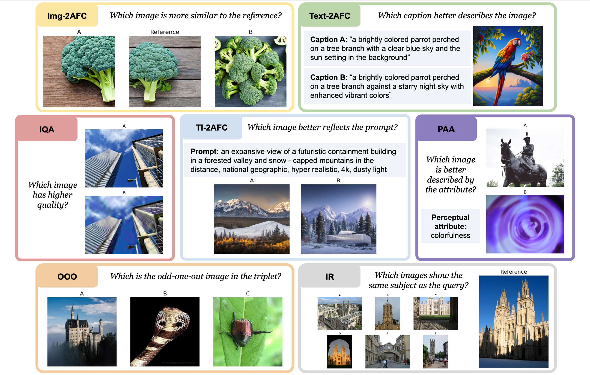
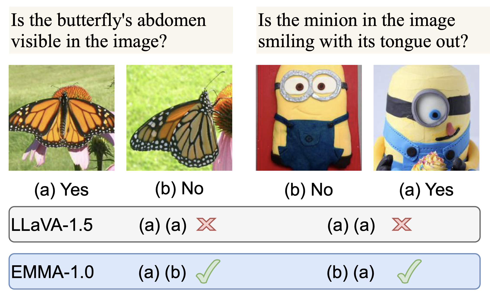
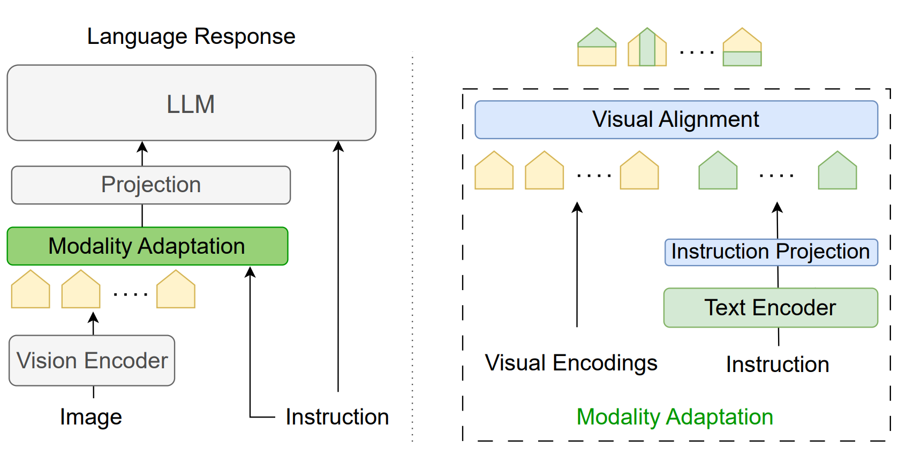
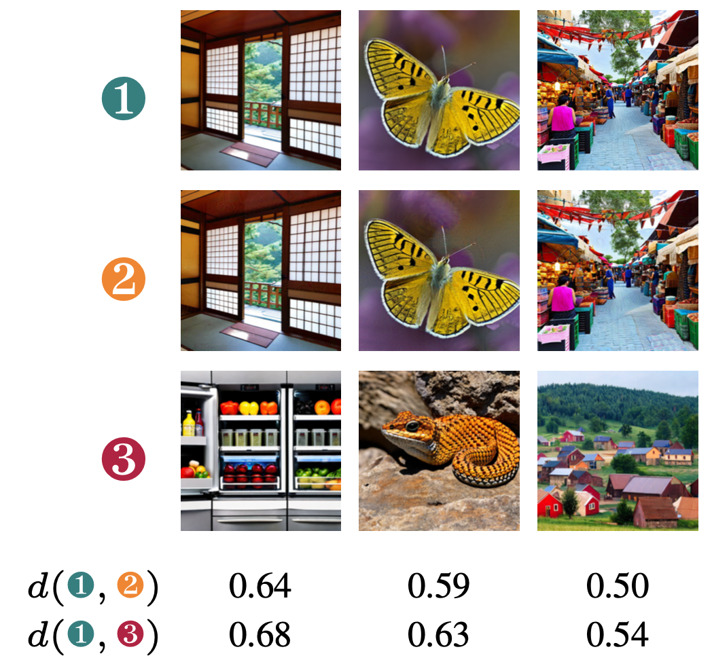
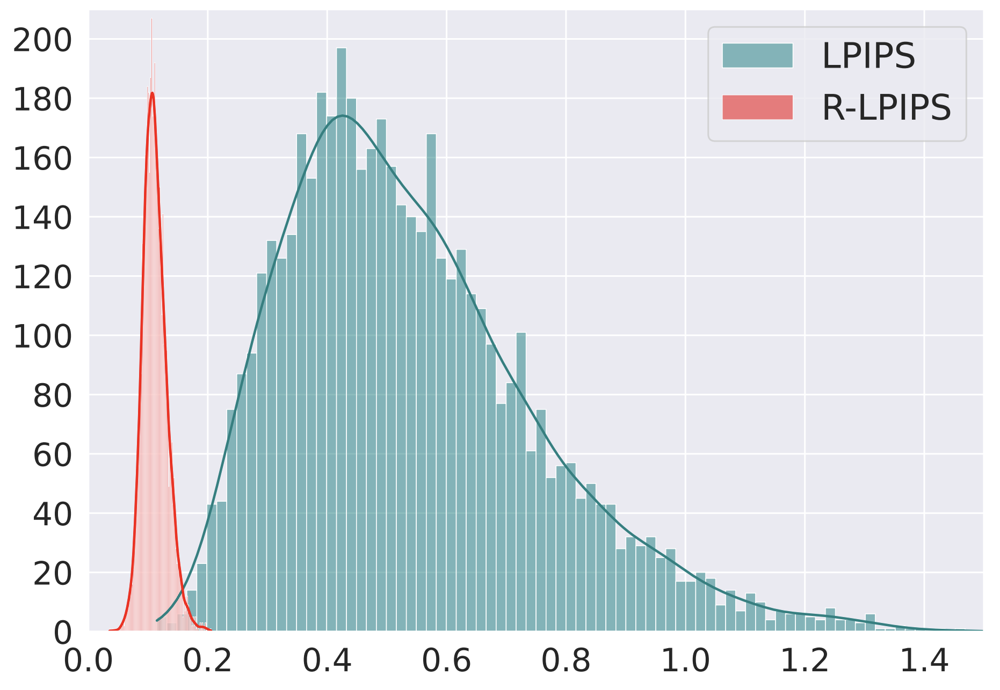

I am a Ph.D. candidate in Electrical and Computer Engineering at New York University, working within the EnSuRe Research Group under the advisement of Siddharth Garg and Farshad Khorrami. My research is dedicated to advancing the visual understanding and reasoning Multimodal Large Language Models (MLLMs) and Foundation Models.
In summer 2025, I joined Adobe as a Research Scientist Intern to evaluate and enhance the visual prompt-following capabilities of state-of-the-art generative models. My work specifically focused on establishing systematic frameworks to identify and expose visual hallucinations in visually-guided image editing.
In summer 2026, I will be joining Apple as an Applied Research Scientist Intern to work on video understanding in generative models.
research
My research is at the intersection of computer vision and multimodal large language models, with a focus on how these models perceive, align, and reason about visual content. My earlier work spans perceptual similarity metrics and visual alignment in multimodal LLMs, where I studied how to make vision-language systems more robust and better aligned with human perception. Building on this foundation, I have increasingly turned to the temporal dimension of visual understanding.
In Chain-of-Frames (CVPR 2026), I introduced a frame-aware reasoning approach for video understanding in MLLMs that produces explicit temporal grounding traces, leveraging synthetic data to teach models to anchor their reasoning in specific frames rather than treating videos as undifferentiated visual context. I have since extended this line of work from single-video to multi-video settings.
In my latest project, SYNCR, I introduce a controlled synthetic data generation pipeline for reasoning across video streams with programmatically verified grounding, which reveals substantial shortcomings in the cross-video reasoning capabilities of current MLLMs.
News
- May 2026 SYNCR released on arXiv, introducing a controlled synthetic benchmark for cross-video reasoning.
- Feb 2026 Chain-of-Frames was accepted to CVPR 2026.
- Dec 2025 Attended NeurIPS 2025 to present SpotEdit and Chain-of-Frames papers.
- Sep 2025 SpotEdit accepted to NeurIPS 2025 Workshop, with benchmark and code released on GitHub.
- Jun 2025 Chain-of-Frames released on arXiv, with code and models on GitHub.
- May 2025 Joined Adobe as a Research Intern, advancing research on unified multimodal models.
- May 2025 EMMA accepted to TMLR 2025.
- Apr 2025 UniSim accepted to CVPR Workshop 2025.
- Jun 2024 Attended CVPR 2024.
- Jan 2024 LipSim accepted to ICLR 2024.
- Jun 2023 R-LPIPS accepted to ICML Workshop 2023.
- Jan 2023 Started my Ph.D. at NYU.
Publications

We introduce SYNCR, a controlled synthetic benchmark for cross-video reasoning with programmatically verified grounding. Built using Habitat, Kubric, and CLEVRER, it contains 8,163 multi-video QA pairs evaluating MLLMs across four diagnostic pillars, revealing a substantial gap between current models and human performance.

We propose chain-of-frames (CoF) to obtain video LLMs whose reasoning steps are grounded in, and explicitly refer to, the relevant frames. Fine-tuned on a large dataset of synthetic and natural video reasoning traces, our models outperform baselines without requiring complex inference pipelines.

SpotEdit is a comprehensive benchmark designed to systematically assess visually-guided image editing methods. It highlights a critical hallucination component, uncovering how leading models like GPT-4o erroneously perform edits by hallucinating visual cues.


UniSim-Bench tracks the progress of perceptual similarity metrics across uni- and multimodal tasks. We propose UniSim, a set of multi-task models that lay the groundwork for understanding general-purpose perceptual metrics beyond narrow applications.


EMMA (Efficient Multi-Modal Adaptation) is a lightweight module designed to fuse visual and textual encodings with minimal added parameters. It generates instruction-aware visual representations, boosting performance and reducing hallucinations.

We demonstrate the vulnerability of SOTA perceptual similarity metrics to adversarial attacks. We propose LipSim, trained with 1-Lipschitz neural networks, to provide a robust metric with provable guarantees.

We show LPIPS is sensitive to adversarial perturbation and propose R-LPIPS via Adversarial Training. R-LPIPS leverages adversarially trained deep features to demonstrate robustness compared to the standard metric.